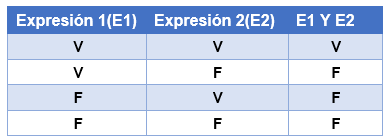

Los operadores lógicos son resultados de evaluación de expresiones que responden a condiciones que permiten la toma de decisiones, los operadores utilizados son: Y, O, NO.
Operador Y
Y o también conocido como AND. De este operador se pueden obtener los siguientes resultandos:
V= verdadero
F=Falso

En este operador el resultado de la evaluación de la expresión será verdadero solo si todas las expresiones de esta son verdaderas, de lo contrario será falsa. Se debe tener en cuenta que para utilizar estas expresiones se utilizan los operadores relacionales como se mostró anteriormente en el ítem de operadores, entre los cuales están <,>, <=, >=, =, <>.
Ejemplo
Evaluando la expresión:
(10 > 17) And (5 <2)
F y F
F
Según la definición es falso porque una de ellas es falsa.
Operador O
Conocido como OR. De este operador se pueden obtener los siguientes resultandos:
V= verdadero
F=Falso
En este operador el resultado de la evaluación de la expresión será falsa solo si todas las expresiones de esta son falsas, de lo contrario será verdadera. Se debe tener en cuenta que para utilizar estas expresiones se utilizan los operadores relacionales como se mostró anteriormente en el ítem de operadores, entre los cuales están <,>, <=, >=, =, <>.
Evaluando la expresión:
(19 > 17) Or (5 <2)
V y F
V
Según la definición es Verdadero porque una de ellas es Verdadera.
Operador NO
NO o también conocido como NOT. De este operador se pueden obtener los siguientes resultandos:
V= verdadero
F=Falso

Ejemplo
Evaluando la expresión:
Not (10>17)
Not (Verdadero)
Falso
Según la definición es Falso porque la condición es Verdadera, y al negarla, queda Falsa